The 4-minute plan
The story stays the same; the delivery gets tighter. Nine screens, seven beats. Spend the time on the journey from one amendment on page 4 to a calculated $82,107.94, not on the dashboard.
The business problem — Home
$757,338 potential leakage across 23 synthetic findings, $0 Finance-validated (demo), cash recovered not yet tracked, and the four-stage path from contract to cash.
"Businesses negotiate contracts full of amendments, escalations and entitlements. But are they all reflected in what gets billed? Value can be lost in the gap between what the business is entitled to earn and what reaches an invoice. On this synthetic data the prototype identifies $757,338 in potential discrepancies across 23 findings. These are opportunities to investigate, not confirmed losses or recovered revenue."
It frames the problem in Finance terms before any technology appears.
"This is a real Finance problem worth investigating."
Do: pause after "$757,338". Don't start explaining technology.
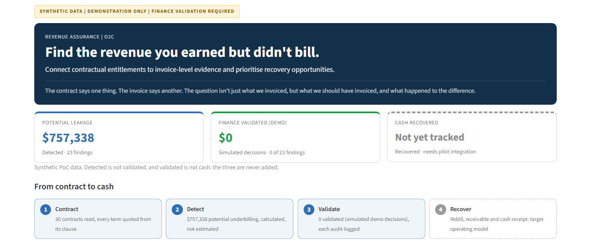
01_home_business_outcome.png · Home, top of page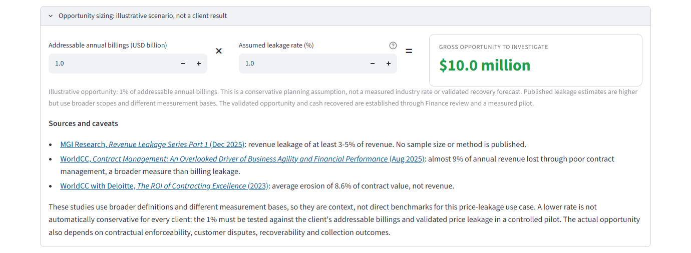
01b_opportunity_sizing.png · Open only if asked about market size. $1B × 1% = $10M is a planning assumption, not a measured industry rate; the published studies on screen use broader definitions, so they are context, not benchmarks.The contract-to-cash journey
The journey from contract data to measured cash. Blue boxes are built in the PoC; grey dashed boxes are pilot scope. The table shows where each step lives in the app.
"Revenue Leakage Hunter reads contract terms, reconciles them against billing, quantifies the discrepancy and prepares evidence-backed findings for Finance. That part is built. Rebilling, receivables and cash tracking — the grey boxes — are what a pilot adds."
It shows exactly where the PoC ends, before anyone has to ask.
"They are clear about what is built and what isn't."
Do: explain blue versus grey in one sentence and move on. Don't read the table.
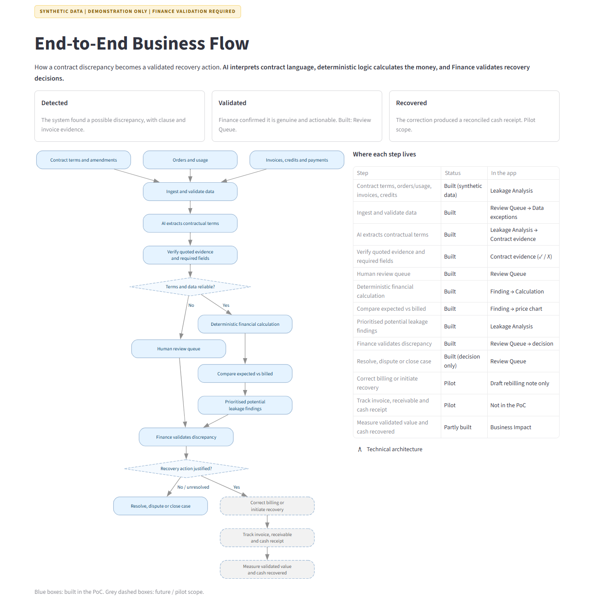
02_end_to_end_journey.png · Sidebar → How it works → End-to-End FlowThe priority case
Meridian Freightways, contract C-2003: contract price $12.30 against $11.53 billed, $82,108 potential underbilling, awaiting review, sourced to clause AM1.1 on page 4.
"Let me show you one example. Meridian Freightways, contract C-2003. One contract, one missed amendment."
It moves from a portfolio number to one concrete case the jury can follow end to end.
"Show me."
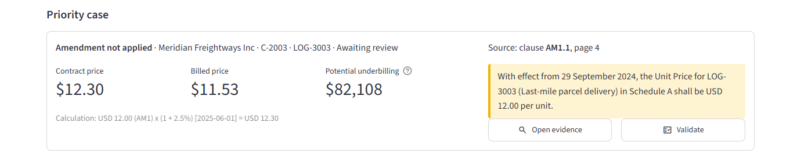
03_priority_case.png · Home → Priority case. Next click: Open evidenceContract evidence — C-2003, page 4
Amendment No. 1, highlighted on page 4: from 29 September 2024 the unit price is USD 12.00. Beside it, the terms read from the contract, each with its clause and a verified quote.
"The amendment on page 4 changes the unit price to $12.00 from 29 September 2024. It existed in the contract, but the invoice records do not reflect the amended entitlement. That is hard to catch consistently when terms are spread across long contracts, amendments and billing records."
The information wasn't missing. It never showed up in what was billed.
"I can see why this is hard to find at scale."
Do: point at the highlighted amendment and give the jury a moment to read it. Don't say "billing never loaded it". We can see the invoices; we can't see the billing system's configuration history.
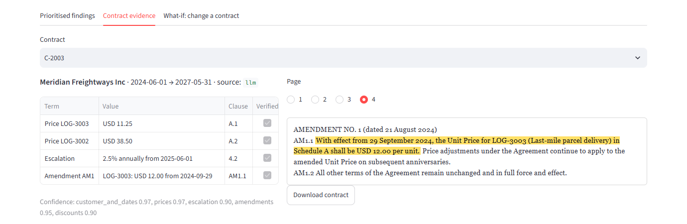
04_contract_evidence_C2003.png · Leakage Analysis → Contract evidence → C-2003 → Page 4The money reveal — Finding F-003
USD 82,107.94 potential underbilling across 15 invoice lines (October 2024 – December 2025). The chart shows the contract price stepping to $12.00, then $12.30, while billing stays at $11.25, then $11.53.
"The amendment increased the contractual price to $12.00. When the 2.5% escalation became applicable in June 2025, billing continued to apply it to the previous $11.25 base. The correct entitlement was $12.30; the invoices show $11.53. Across 15 invoice lines, the prototype calculates $82,107.94 in potential underbilling. We're not just flagging an anomaly. We connect an entitlement, an effective date, an invoice line and a calculated difference."
Unstructured contract text becomes a quantified, explainable Finance case.
"I can see exactly what was missed and why."
Do: this is the main wow moment, so pause after "$82,107.94". The line-by-line proof is in The $82,107.94 below.
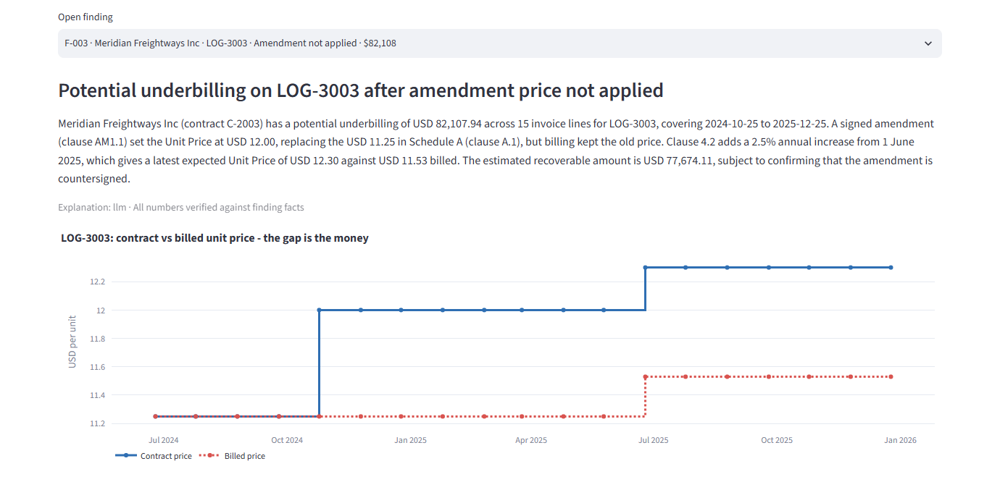
05_finding_F003_money_reveal.png · Leakage Analysis → Prioritised findings → F-003 (opened by the Home button)Evidence to action
Three quoted clauses (price A.1, escalation 4.2, amendment AM1.1), the calculation USD 12.00 × (1 + 2.5%) = USD 12.30, an owner, a recommended action, a draft rebilling note and the affected invoice lines.
"AI reads the contract language, extracts the terms and links each one to its source clause. But AI doesn't decide the money. A deterministic engine applies the price, escalation and effective-date rules to each invoice line and calculates the difference. Every finding arrives with its clauses, its calculation, its invoice lines, an owner and a next step."
AI interprets; a controlled engine computes. That split is the core differentiation.
"I could audit this."
Do: point to the three clauses, the calculation and the invoice table. Don't read the clauses or scroll through every line.
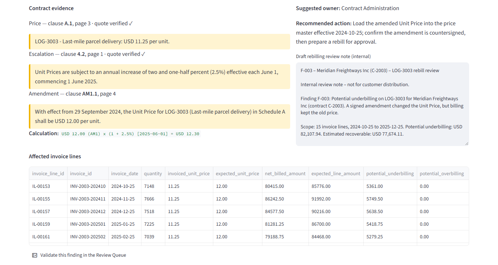
06_evidence_to_action.png · Same finding, lower half. Next click: Validate this finding in the Review QueueFinance review — Review Queue
F-003 awaiting review, with its evidence, calculation, owner and action, and a decision form (validated, unresolved or closed). "Recovery starts only after Finance validates the finding."
"The system doesn't replace Finance judgement. Every finding goes to review with an owner, its evidence and a recommended action. Finance decides, and every decision is written to an audit log."
A person stays accountable for every recovery action.
"Finance stays in control."
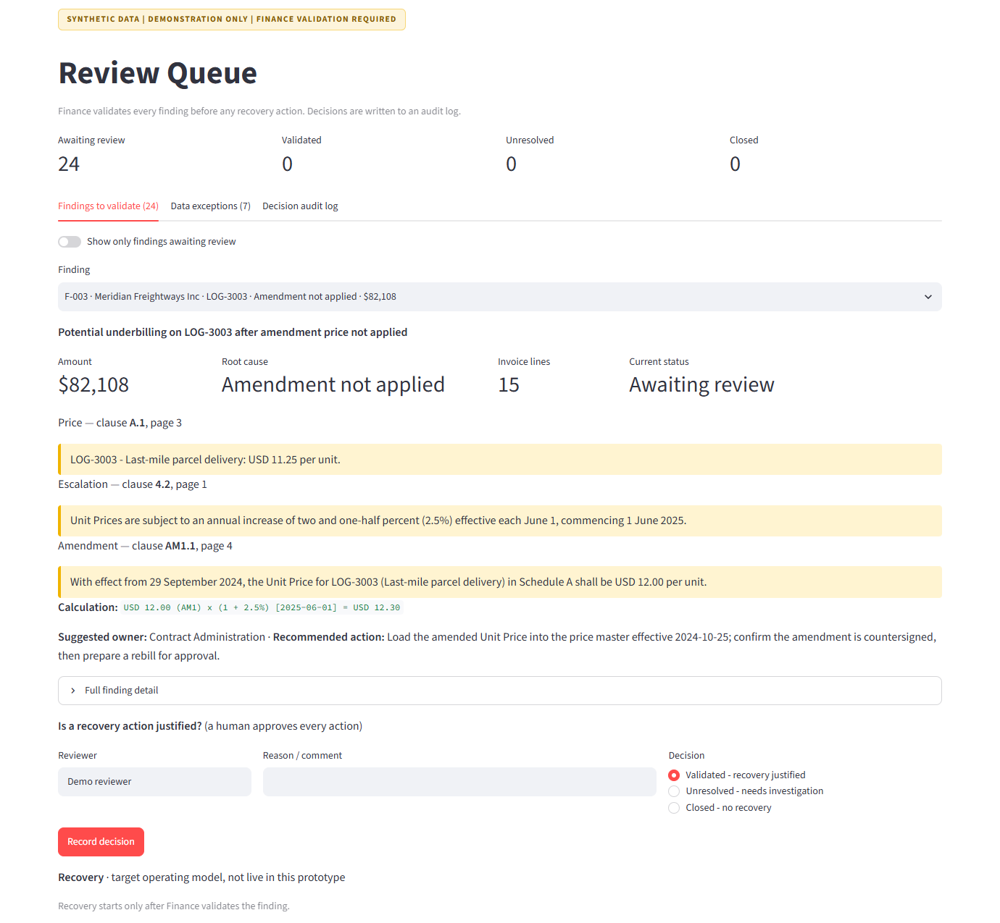
07_review_queue.png · Home → Priority case → ValidateRefusing to guess
Invoice line IL-00801 was billed in EUR against a USD contract. Status REVIEW: "no FX conversion policy is configured". No leakage figure is produced.
"And when it can't calculate safely, like a EUR invoice on a USD contract with no approved FX policy, it refuses to guess and holds the line for a person. Trust is also knowing when not to produce a number."
A Finance tool earns trust as much by what it declines to calculate as by what it finds.
"This is built for financial control, not just AI answers."
Do: point to the second row only. Ten seconds. The tab count (7) now matches the rows: 5 held for review plus 2 exact duplicates excluded, as the caption says.
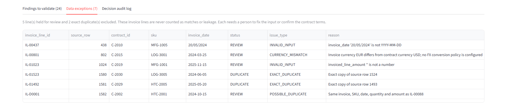
08_currency_exception_control.png · Review Queue → Data exceptions (captured in a wider window so the full reason is readable)Path to cash and close
A simulated Finance decision recorded for F-003. The recovery panel: validated opportunity (demo) $82,108 · billing correction: draft note ready · receivable: not yet tracked · cash recovered: not yet tracked. Business Impact keeps detected, validated and cash separate.
"For this demonstration I'm recording a simulated Finance decision. In production only an authorised Finance reviewer would validate a finding, and the decision would go to the audit trail. Detected is not validated, validated is not billed, and billed is not collected. Our next step is a controlled client pilot that measures each of those stages."
It ends on a credible, measurable path to cash instead of a claimed recovery.
"This is a practical proposition we could pilot."
Say "simulated" out loud before you click Record decision. The app now labels it on screen: "Recorded (simulated demo decision)", "Validated opportunity (demo)" and "Demo decision on synthetic data, not a real Finance approval". Before going on stage, delete data/output/review_decisions.csv so the jury doesn't see an earlier demo decision as if it were real.
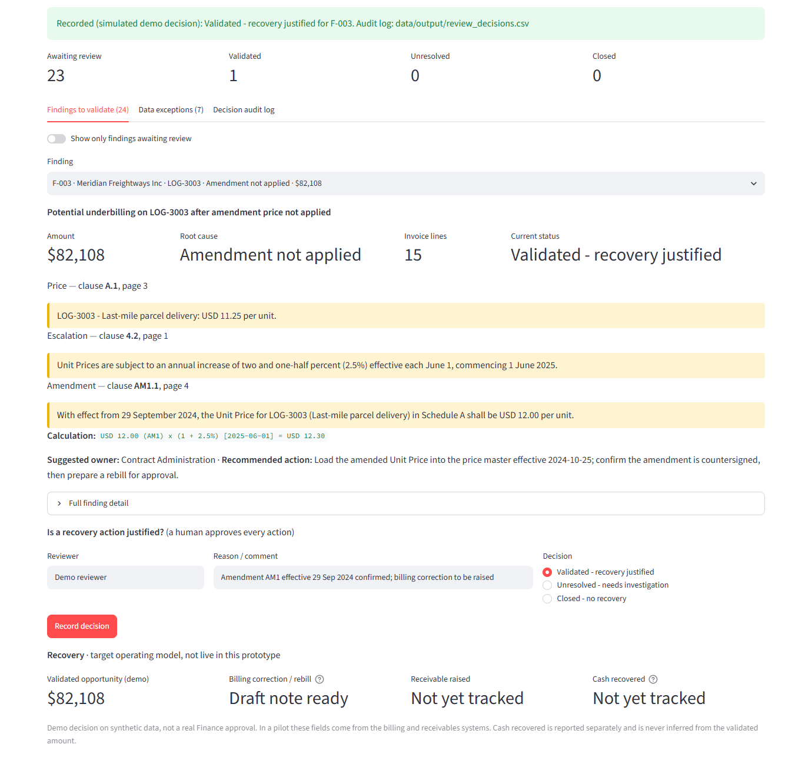
09_business_outcome_path_to_cash.png · Review Queue → Validated – recovery justified → Record decision (simulated; reviewer and comment entered for the demo)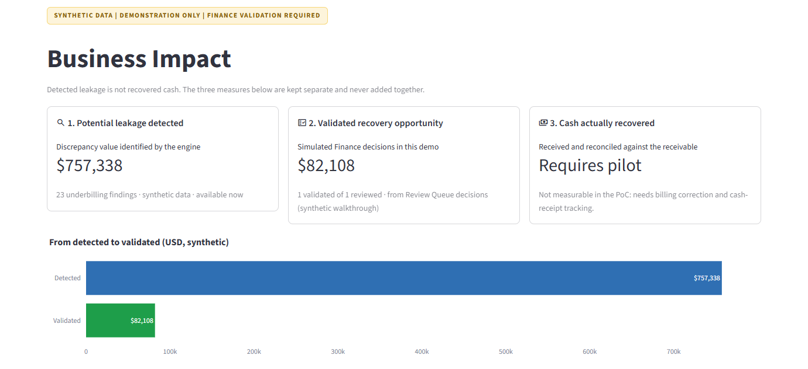
09b_business_impact.png · Preferred final screen: detected $757,338 → simulated validated $82,108 → cash actually recovered: requires pilot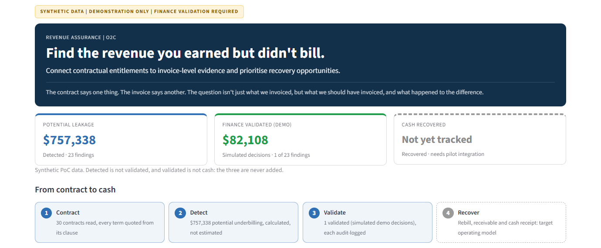
09c_home_after_validation.png · Home after the decision, if you want to show the dashboard responding"We are not building another AI dashboard. We are connecting what a business is contractually entitled to earn with what it actually bills — and enabling Finance to act on the difference. Thank you."
Do: stop talking after the closing line.
The $82,107.94, proved line by line
Recomputed independently from the 15 invoice lines (quantity × per-unit gap). It matches the app to the cent. September 2024 is correctly a match, because it predates the amendment.
| Period | Applies | Contract price | Billed | Gap / unit | Lines | Units | Potential underbilling |
|---|---|---|---|---|---|---|---|
| Jun – Sep 2024 | Base price A.1 | $11.25 | $11.25 | $0.00 | 4 | — | $0.00 (match) |
| Oct 2024 – May 2025 | Amendment AM1.1 (from 29 Sep 2024) | $12.00 | $11.25 | $0.75 | 8 | 58,301 | $43,725.75 |
| Jun – Dec 2025 | AM1.1 + 2.5% escalation (4.2, from 1 Jun 2025) | $12.30 | $11.53 | $0.77 | 7 | 49,847 | $38,382.19 |
| Total, finding F-003 | 15 | 108,148 | $82,107.94 | ||||
$12.00 × 1.025 = $12.30 (correct). $11.25 × 1.025 = $11.53125, invoiced as $11.53 (escalation applied to the old base). The total comes from quantities on each line, not from $0.77 × a line count. The narrative's "estimated recoverable USD 77,674.11" is an illustrative haircut, not a forecast.
How it works — in 30 seconds
Understand the contract
- Extract prices, amendments and escalation clauses
- Read terms however they are worded ("two and one-half percent")
- Quote every term with its clause and page; quotes are verified against the source
Does not calculate money, choose FX rates or approve anything.
Prove the discrepancy
- Reconcile terms with each invoice line
- Apply effective dates and escalation rules
- Calculate the variance to the cent
- Hold currency, data-quality and duplicate issues for review
Plain Python arithmetic; same inputs, same answer every time.
Enable Finance action
- Prioritise findings, suggest an owner and an action
- Draft a rebilling review note
- Record every decision in an audit log
Prioritisation and routing are rule-based today, not autonomous agents. Say so if asked.
If asked about offline mode: "The walkthrough replays cached outputs from the AI extraction so the demo is deterministic and doesn't depend on network or model availability. We're not presenting this run as live model inference. The extraction itself runs with Claude and was measured on our synthetic development set. A blind test on independently written contracts is the next validation step."
Current status on this branch: 100 automated tests pass. The blind holdout (B-005) is still open, so don't quote any AI accuracy figure beyond "development set, not blind".
Financial language — four states, never added together
Potential discrepancies across 23 synthetic findings.
F-003 marked validated in a simulated decision. Not a real Finance approval.
A draft rebilling note exists; no corrected invoice is issued.
Receivable and cash receipt are pilot scope.
"Detected is not validated, validated is not billed, and billed is not collected."
| Avoid saying | Say instead |
|---|---|
| We recovered $757K | We identified $757K in potential discrepancies |
| We found $82K of revenue | The prototype calculated $82,107.94 potential underbilling |
| Finance approved $82K | A simulated Finance validation was recorded |
| Billing never loaded the amendment | The invoice records do not reflect the amended entitlement |
| AI fixes billing | The system prepares evidence and recommends a corrective action |
| Finance One / AP Suite can't do this | We complement existing platforms; the exact gap is being validated with their owners |
Why a business would fund it — the pilot proposition
The problem isn't invoice reconciliation. It's contractual entitlements not consistently reaching billing. Revenue Leakage Hunter is an intelligence and control layer between contracts and existing ERP, billing and Finance workflows. It doesn't replace them.
The architecture repeats. Logistics, manufacturing, consumer goods, healthcare and life sciences differ in contract structures and pricing rules. Those differences live in configuration and domain-specific extraction, not in a rebuild.
"We want to take this from a synthetic proof of concept to a controlled client pilot: a defined set of contracts, reconciled against actual billing, with Finance validating the outcomes. The objective is simple: turn contractual intelligence into measurable financial action."
| Area | What the pilot measures |
|---|---|
| Coverage | Contracts and invoice lines analysed |
| Detection | Potential discrepancies identified |
| Accuracy | Finance-validated findings ÷ reviewed findings |
| Financial impact | Validated opportunity value, then cash actually collected |
| Efficiency | Time to identify and to review a finding |
| Governance | Evidence traceability and audit completeness |
Don't promise a recovery rate or savings amount before real client data has been validated.
Likely jury questions
We connect contract-entitlement intelligence to invoice reconciliation and evidence-backed Finance action, and we complement existing systems. The precise gap against each platform is being validated with its owners.
Rules work once terms are structured. Entitlements are buried in prose, amendments and varied wording. AI turns that into structured, quoted evidence; deterministic rules then calculate the money.
Every extracted term must quote its source clause, and the quote is checked against the document. Unsupported, ambiguous or incomplete terms are held for review, never priced.
It is deterministic and traceable: 15 invoice lines, each with its quantity, contract price and billed price (see the table above). In a pilot, Finance validates against source records before any action.
Effective dates and precedence are applied explicitly. Where interpretation can't be established confidently, the case is held for review rather than assuming the latest text wins.
Measured on our synthetic development set; a blind test on independently written contracts is the next step. Every number still passes through the deterministic engine and Finance review.
A pilot starts with controlled extracts from approved contract repositories and billing/ERP data, and moves to production interfaces after that. No integration is live today.
Configurable contract schemas, pricing rules and source connectors per industry and client, on the same core architecture.
Pre-stage checklist
- $82,107.94 reconciled line by line (15 lines) 3 Nov
- AM1.1 = $12.00 from 29 Sep 2024; clause 4.2 = 2.5% from 1 Jun 2025 contract text
- Data exceptions count matches rows (7 = 5 held + 2 duplicates) app fixed
- EUR/USD line held as REVIEW, no FX rate invented
- Simulated decision labelled on screen (flash, KPI, recovery panel, Business Impact)
- SYNTHETIC DATA | DEMONSTRATION ONLY | FINANCE VALIDATION REQUIRED strip on every page
- End-to-End Flow table no longer truncated
- Cash recovered stays "Not yet tracked"
- 100 automated tests pass on this branch 3 Nov
- Delete
data/output/review_decisions.csv, so F-003 starts as Awaiting review - Start with
.\scripts\tasks.ps1 offline; check Offline demo mode is on - Rehearse the full 4 minutes against a timer at least twice
- Decide whether your Finance/O2C partner speaks steps 1 and 9
- Keep the 01b and 09c screens as backup only